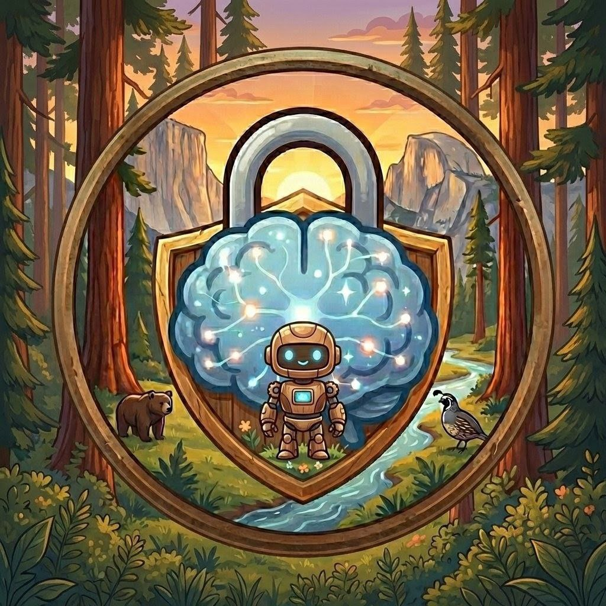

<title>Synapse</title>
<meta name="viewport" content="width=device-width, initial-scale=1" />
<link rel="icon" type="image/jpeg" href="vault-profile.jpg" />
<link rel="apple-touch-icon" href="vault-profile.jpg" />
<meta name="description" content="Text it. Email it. It handles it — and remembers everything. A personal AI assistant that lives in your inbox and messages, backed by files you own." />
<meta property="og:title" content="Synapse" />
<meta property="og:description" content="Text it. Email it. It handles it — and remembers everything." />
<meta property="og:image" content="vault-profile.jpg" />
<meta property="og:type" content="website" />
<meta name="twitter:card" content="summary_large_image" />
<meta name="twitter:title" content="Synapse" />
<meta name="twitter:description" content="Text it. Email it. It handles it — and remembers everything." />
<meta name="twitter:image" content="vault-profile.jpg" />
<link rel="preconnect" href="https://fonts.googleapis.com" />
<link rel="preconnect" href="https://fonts.gstatic.com" crossorigin />
<link
  href="https://fonts.googleapis.com/css2?family=Fraunces:opsz,wght@9..144,400;9..144,500;9..144,600;9..144,700&family=Source+Sans+3:wght@400;500;600;700&family=IBM+Plex+Mono:wght@400;500&display=swap"
  rel="stylesheet"
/>

<style>
  /* ---------- tokens ---------- */
  :root {
    /* dark-first: bare root = dark walnut palette */
    --pine-950: #1a140e;
    --pine-900: #201810;
    --pine-800: #2a2015;
    --pine-700: #3b2d1c;
    --stone-100: #f2e9da;
    --stone-300: #cbb99e;
    --ink: #f2e9da;
    --ink-dim: #b3a28a;
    --surface: #241b12;
    --surface-raised: #2d2216;
    --rule: rgba(242, 233, 218, 0.13);
    --ember: #c97a42;
    --ember-dim: #ac6535;
    --glow: #93ab72;
    --glow-dim: #798f5b;

    --font-display: "Fraunces", "Iowan Old Style", "Georgia", serif;
    --font-body: "Source Sans 3", "Segoe UI", system-ui, sans-serif;
    --font-mono: "IBM Plex Mono", "SF Mono", Menlo, monospace;
  }

  @media (prefers-color-scheme: light) {
    :root:not([data-theme="dark"]) {
      --pine-950: #f6f0e3;
      --pine-900: #efe7d5;
      --pine-800: #e4d9c1;
      --pine-700: #cfbd9c;
      --stone-100: #2b2318;
      --stone-300: #5a4d38;
      --ink: #2b2318;
      --ink-dim: #6d6049;
      --surface: #fffcf5;
      --surface-raised: #ffffff;
      --rule: rgba(43, 35, 24, 0.12);
      --ember: #b05f2c;
      --ember-dim: #924e24;
      --glow: #5d7645;
      --glow-dim: #4a5f37;
    }
  }

  :root[data-theme="light"] {
    --pine-950: #f6f0e3;
    --pine-900: #efe7d5;
    --pine-800: #e4d9c1;
    --pine-700: #cfbd9c;
    --stone-100: #2b2318;
    --stone-300: #5a4d38;
    --ink: #2b2318;
    --ink-dim: #6d6049;
    --surface: #fffcf5;
    --surface-raised: #ffffff;
    --rule: rgba(43, 35, 24, 0.12);
    --ember: #b05f2c;
    --ember-dim: #924e24;
    --glow: #5d7645;
    --glow-dim: #4a5f37;
  }

  /* ---------- base ---------- */
  * {
    box-sizing: border-box;
  }
  html {
    scroll-behavior: smooth;
  }
  body {
    margin: 0;
    background: var(--pine-900);
    color: var(--ink);
    font-family: var(--font-body);
    font-size: 17px;
    line-height: 1.6;
    -webkit-font-smoothing: antialiased;
  }
  a {
    color: inherit;
  }
  h1,
  h2,
  h3 {
    font-family: var(--font-display);
    font-weight: 600;
    text-wrap: balance;
    margin: 0;
    color: var(--ink);
  }
  p {
    margin: 0;
  }
  .eyebrow {
    font-family: var(--font-mono);
    font-size: 0.78rem;
    letter-spacing: 0.12em;
    text-transform: uppercase;
    color: var(--glow);
  }
  .wrap {
    max-width: 1080px;
    margin: 0 auto;
    padding: 0 28px;
  }
  section {
    padding: 88px 0;
    border-bottom: 1px solid var(--rule);
  }
  section:last-of-type {
    border-bottom: none;
  }

  /* ---------- nav ---------- */
  header.nav {
    position: sticky;
    top: 0;
    z-index: 10;
    background: color-mix(in srgb, var(--pine-900) 88%, transparent);
    backdrop-filter: blur(10px);
    border-bottom: 1px solid var(--rule);
  }
  .nav-inner {
    display: flex;
    align-items: center;
    justify-content: space-between;
    padding: 18px 28px;
    max-width: 1080px;
    margin: 0 auto;
  }
  .wordmark {
    display: flex;
    align-items: center;
    gap: 10px;
    font-family: var(--font-display);
    font-weight: 600;
    font-size: 1.25rem;
    letter-spacing: 0.01em;
  }
  .wordmark span {
    color: var(--ember);
  }
  .wordmark img {
    width: 30px;
    height: 30px;
    border-radius: 50%;
    object-fit: cover;
    border: 1px solid var(--rule);
  }

  .hero-badge {
    width: 76px;
    height: 76px;
    border-radius: 50%;
    object-fit: cover;
    border: 2px solid var(--rule);
    box-shadow: 0 0 0 6px color-mix(in srgb, var(--glow) 12%, transparent);
    display: block;
  }
  nav.links {
    display: flex;
    gap: 28px;
    font-size: 0.92rem;
  }
  nav.links a {
    text-decoration: none;
    color: var(--ink-dim);
    transition: color 0.15s ease;
  }
  nav.links a:hover,
  nav.links a:focus-visible {
    color: var(--ink);
  }

  /* ---------- hero ---------- */
  .hero {
    padding: 96px 0 80px;
    border-bottom: 1px solid var(--rule);
  }
  .hero-grid {
    display: grid;
    grid-template-columns: 1.05fr 0.95fr;
    gap: 56px;
    align-items: center;
  }
  .hero h1 {
    font-size: clamp(2.4rem, 4.4vw, 3.6rem);
    line-height: 1.08;
    margin-top: 14px;
  }
  .hero h1 em {
    font-style: italic;
    color: var(--ember);
  }
  .hero-sub {
    margin-top: 22px;
    font-size: 1.13rem;
    color: var(--ink-dim);
    max-width: 46ch;
  }
  .cta-row {
    display: flex;
    gap: 14px;
    margin-top: 34px;
    flex-wrap: wrap;
  }
  .btn {
    display: inline-flex;
    align-items: center;
    gap: 8px;
    padding: 13px 22px;
    border-radius: 6px;
    font-size: 0.96rem;
    font-weight: 600;
    text-decoration: none;
    border: 1px solid transparent;
    transition: transform 0.15s ease, border-color 0.15s ease, background 0.15s ease;
  }
  .btn:hover {
    transform: translateY(-1px);
  }
  .btn-primary {
    background: var(--ember);
    color: var(--pine-950);
  }
  .btn-primary:hover {
    background: var(--ember-dim);
  }
  .btn-ghost {
    border-color: var(--rule);
    color: var(--ink);
  }
  .btn-ghost:hover {
    border-color: var(--ink-dim);
  }

  /* ---------- log panel ---------- */
  .log-panel {
    background: var(--surface);
    border: 1px solid var(--rule);
    border-radius: 10px;
    overflow: hidden;
    box-shadow: 0 24px 60px -32px rgba(43, 26, 12, 0.45);
  }
  .log-panel-head {
    display: flex;
    align-items: center;
    gap: 8px;
    padding: 12px 16px;
    border-bottom: 1px solid var(--rule);
    font-family: var(--font-mono);
    font-size: 0.75rem;
    color: var(--ink-dim);
  }
  .log-panel-head .dot {
    width: 8px;
    height: 8px;
    border-radius: 50%;
    background: var(--glow);
  }
  .log-body {
    padding: 20px 18px 24px;
    font-family: var(--font-mono);
    font-size: 0.86rem;
    display: flex;
    flex-direction: column;
    gap: 13px;
  }
  .log-line {
    opacity: 0;
    transform: translateY(5px);
    animation: logIn 0.5s ease forwards;
  }
  .log-line:nth-child(1) {
    animation-delay: 0.15s;
  }
  .log-line:nth-child(2) {
    animation-delay: 0.55s;
  }
  .log-line:nth-child(3) {
    animation-delay: 1s;
  }
  .log-line:nth-child(4) {
    animation-delay: 1.5s;
  }
  .log-line:nth-child(5) {
    animation-delay: 2s;
  }
  .log-line:nth-child(6) {
    animation-delay: 2.5s;
  }
  @keyframes logIn {
    to {
      opacity: 1;
      transform: none;
    }
  }
  .tag {
    display: inline-block;
    font-size: 0.72rem;
    padding: 1px 7px;
    border-radius: 4px;
    margin-right: 8px;
    letter-spacing: 0.02em;
  }
  .tag-tg {
    background: color-mix(in srgb, var(--glow) 20%, transparent);
    color: var(--glow);
  }
  .tag-email {
    background: color-mix(in srgb, var(--ember) 20%, transparent);
    color: var(--ember);
  }
  .tag-cron {
    background: color-mix(in srgb, var(--ink-dim) 22%, transparent);
    color: var(--ink-dim);
  }
  .log-reply {
    color: var(--ink-dim);
    padding-left: 2px;
  }
  .log-reply::before {
    content: "→ ";
    color: var(--stone-300);
  }
  .log-commit {
    color: var(--ink-dim);
    font-size: 0.8rem;
    border-top: 1px dashed var(--rule);
    padding-top: 13px;
    margin-top: 2px;
  }
  .log-commit .hash {
    color: var(--glow);
  }
  .cursor {
    display: inline-block;
    width: 7px;
    height: 1em;
    background: var(--glow);
    vertical-align: text-bottom;
    margin-left: 2px;
    animation: blink 1s step-end infinite;
  }

  @media (prefers-reduced-motion: reduce) {
    .log-line {
      animation: none;
      opacity: 1;
      transform: none;
    }
    .cursor {
      animation: none;
    }
  }
  @keyframes blink {
    50% {
      opacity: 0;
    }
  }

  /* ---------- channels ---------- */
  .section-head {
    max-width: 58ch;
    margin-bottom: 52px;
  }
  .section-head h2 {
    font-size: clamp(1.7rem, 3vw, 2.2rem);
    margin-top: 12px;
  }
  .section-head p {
    margin-top: 14px;
    color: var(--ink-dim);
    font-size: 1.04rem;
  }
  .channels {
    display: grid;
    grid-template-columns: repeat(3, 1fr);
    gap: 0;
    border: 1px solid var(--rule);
    border-radius: 10px;
    overflow: hidden;
  }
  .channel {
    padding: 32px 28px;
    border-right: 1px solid var(--rule);
  }
  .channel:last-child {
    border-right: none;
  }
  .channel .num {
    font-family: var(--font-mono);
    font-size: 0.78rem;
    color: var(--glow);
    letter-spacing: 0.06em;
  }
  .channel h3 {
    font-size: 1.2rem;
    margin-top: 12px;
  }
  .channel p {
    margin-top: 10px;
    color: var(--ink-dim);
    font-size: 0.96rem;
  }

  /* ---------- features ---------- */
  .feature-list {
    display: flex;
    flex-direction: column;
  }
  .feature {
    display: grid;
    grid-template-columns: 260px 1fr;
    gap: 32px;
    padding: 28px 0;
    border-top: 1px solid var(--rule);
    align-items: baseline;
  }
  .feature:last-child {
    border-bottom: 1px solid var(--rule);
  }
  .feature h3 {
    font-size: 1.15rem;
    font-weight: 600;
    font-family: var(--font-body);
  }
  .feature p {
    color: var(--ink-dim);
    font-size: 0.98rem;
    max-width: 56ch;
  }

  /* ---------- ownership / pullquote ---------- */
  .ownership {
    background: var(--surface);
  }
  .pullquote {
    font-family: var(--font-display);
    font-size: clamp(1.5rem, 3vw, 2.1rem);
    line-height: 1.4;
    max-width: 32ch;
    color: var(--ink);
  }
  .pullquote em {
    font-style: italic;
    color: var(--ember);
  }
  .ownership-grid {
    display: grid;
    grid-template-columns: 1fr 1fr;
    gap: 48px;
    align-items: start;
  }
  .ownership-notes {
    display: flex;
    flex-direction: column;
    gap: 22px;
  }
  .ownership-notes .note {
    padding-left: 18px;
    border-left: 2px solid var(--glow);
  }
  .ownership-notes .note strong {
    display: block;
    font-size: 0.98rem;
    margin-bottom: 4px;
  }
  .ownership-notes .note span {
    color: var(--ink-dim);
    font-size: 0.94rem;
  }

  /* ---------- providers ---------- */
  .providers {
    display: flex;
    align-items: center;
    gap: 18px;
    flex-wrap: wrap;
    font-family: var(--font-mono);
    font-size: 0.85rem;
    color: var(--ink-dim);
  }
  .providers .chip {
    border: 1px solid var(--rule);
    border-radius: 5px;
    padding: 6px 12px;
    color: var(--ink);
  }

  /* ---------- final cta ---------- */
  .final-cta {
    text-align: left;
  }
  .final-cta h2 {
    font-size: clamp(2rem, 4vw, 2.8rem);
    max-width: 18ch;
  }
  .final-cta p {
    margin-top: 16px;
    color: var(--ink-dim);
    font-size: 1.05rem;
    max-width: 50ch;
  }

  /* ---------- footer ---------- */
  footer {
    padding: 40px 0 56px;
  }
  .footer-inner {
    display: flex;
    justify-content: space-between;
    align-items: center;
    flex-wrap: wrap;
    gap: 16px;
    color: var(--ink-dim);
    font-size: 0.88rem;
  }
  .footer-inner a {
    text-decoration: none;
    color: var(--ink-dim);
  }
  .footer-inner a:hover {
    color: var(--ink);
  }
  .footer-links {
    display: flex;
    gap: 20px;
  }

  @media (max-width: 860px) {
    .hero-grid {
      grid-template-columns: 1fr;
    }
    .channels {
      grid-template-columns: 1fr;
    }
    .channel {
      border-right: none;
      border-bottom: 1px solid var(--rule);
    }
    .channel:last-child {
      border-bottom: none;
    }
    .feature {
      grid-template-columns: 1fr;
      gap: 8px;
    }
    .ownership-grid {
      grid-template-columns: 1fr;
    }
    nav.links {
      display: none;
    }
  }

  :focus-visible {
    outline: 2px solid var(--glow);
    outline-offset: 2px;
  }
</style>

<header class="nav">
  <div class="nav-inner">
    <div class="wordmark"> Synapse<span>.</span></div>
    <nav class="links">
      <a href="#channels">How it works</a>
      <a href="#features">Features</a>
      <a href="#customize">Customize</a>
      <a href="#ownership">Ownership</a>
      <a href="#start">Get started</a>
    </nav>
  </div>
</header>

<section class="hero">
  <div class="wrap hero-grid">
    <div>
      
      <p class="eyebrow" style="margin-top: 18px">Personal AI · self-hosted</p>
      <h1>Text it. Email it. <em>It handles it</em> — and remembers everything.</h1>
      <p class="hero-sub">
        Synapse is a personal assistant that lives in your inbox and your messages, not an app you have to
        open. It tracks the projects you're actually working on, runs the research you'd otherwise forget
        to do, and takes a quick note the moment you think of it — every conversation written to plain
        files you own, on a machine you control.
      </p>
      <div class="cta-row">
        <a class="btn btn-primary" href="https://github.com/kristianolsson/synapse-engine">See the engine</a>
        <a class="btn btn-ghost" href="https://github.com/kristianolsson/synapse-vault">Start your vault</a>
      </div>
    </div>

    <div class="log-panel" aria-label="Example activity log">
      <div class="log-panel-head"><span class="dot"></span> live in your vault</div>
      <div class="log-body">
        <div class="log-line">
          <span class="tag tag-tg">telegram</span>remind me to call the dentist tomorrow at 9
          <div class="log-reply">Reminder set — tomorrow, 9:00&nbsp;AM.</div>
        </div>
        <div class="log-line">
          <span class="tag tag-tg">telegram</span>add milk and eggs to groceries
          <div class="log-reply">Added to your cart.</div>
        </div>
        <div class="log-line">
          <span class="tag tag-email">email</span>Weekly Market Summary — sent Sun 2:00&nbsp;AM
        </div>
        <div class="log-line">
          <span class="tag tag-cron">scheduled</span>Options scan — weekdays 7:40&nbsp;AM
        </div>
        <div class="log-line">
          <span class="tag tag-email">email</span>"what's on my calendar friday?"
          <div class="log-reply">3 events — details sent.</div>
        </div>
        <div class="log-line log-commit">
          <span class="hash">a7f2c9e</span> Synapse Sync: log dentist reminder<span class="cursor"></span>
        </div>
      </div>
    </div>
  </div>
</section>

<section id="channels">
  <div class="wrap">
    <div class="section-head">
      <p class="eyebrow">How it works</p>
      <h2>Reach it however you already talk to people.</h2>
      <p>
        No new app to learn — and most of what it does happens before you'd think to ask, running quietly
        in the background. When you do reach for it, it's already on the channels you have open.
      </p>
    </div>
    <div class="channels">
      <div class="channel">
        <p class="num">01</p>
        <h3>Scheduled</h3>
        <p>
          The workhorse channel. A reminder can be a one-line nudge, or a fully custom recurring task with
          its own prompt and schedule — a market summary, a daily check-in, a deep weekly analysis. Build it
          once, and it runs on its own from then on.
        </p>
      </div>
      <div class="channel">
        <p class="num">02</p>
        <h3>Email</h3>
        <p>
          Ask it something that needs real research, or forward it a receipt. It stays quiet on routine
          confirmations and speaks up when there's something to tell you.
        </p>
      </div>
      <div class="channel">
        <p class="num">03</p>
        <h3>Telegram</h3>
        <p>
          Quick back-and-forth. Send a task, a link, a question — get a reply in seconds, with one-tap
          buttons for anything you can check off.
        </p>
      </div>
    </div>
  </div>
</section>

<section id="features">
  <div class="wrap">
    <div class="section-head">
      <p class="eyebrow">What ships with it</p>
      <h2>Seven modules to start from.</h2>
      <p>Not a chatbot that just talks — it takes real actions against real accounts. Each of these is a starting point, not a limit; more on that below.</p>
    </div>
    <div class="feature-list">
      <div class="feature">
        <h3>Projects</h3>
        <p>
          Every ongoing thing gets its own file — a home project, a side build, a trip — organized by area,
          with a live dashboard of what's active. Finish one and it's archived automatically.
        </p>
      </div>
      <div class="feature">
        <h3>Research &amp; links</h3>
        <p>Send it an article and it saves and summarizes it, filed under the right project automatically.</p>
      </div>
      <div class="feature">
        <h3>Tasks &amp; reminders</h3>
        <p>
          "Remind me every Saturday to call mom" becomes a real recurring reminder, delivered by text or
          email, no app required.
        </p>
      </div>
      <div class="feature">
        <h3>Email</h3>
        <p>Drafts replies and organizes your inbox — drafts only. It never sends without you.</p>
      </div>
      <div class="feature">
        <h3>Stocks &amp; investing</h3>
        <p>
          Watches a portfolio, scans for options opportunities against thresholds you set, and sends a
          weekly market summary worth actually reading.
        </p>
      </div>
      <div class="feature">
        <h3>Calendar</h3>
        <p>Reads and writes your Google Calendar in plain English — "move Thursday's dentist appointment to 3pm."</p>
      </div>
      <div class="feature">
        <h3>Groceries</h3>
        <p>Builds and manages an Amazon Fresh cart from a running shopping list, remembering what you usually buy.</p>
      </div>
    </div>
  </div>
</section>

<section id="customize">
  <div class="wrap">
    <div class="section-head">
      <p class="eyebrow">Built to be changed</p>
      <h2>The toolkit is a starting point, not a fixed feature list.</h2>
      <p>
        Every module above comes from a small protocol file — plain instructions the assistant reads before
        it acts. Once you clone the vault template, those files are yours: tighten a rule, add a module for
        something you track that isn't listed here, or delete one you'll never touch.
      </p>
    </div>
    <div class="feature-list">
      <div class="feature">
        <h3>Recurring research, not just reminders</h3>
        <p>A scheduled task that actually goes and looks — this week's schedule, last week's market move, the storylines heading into a big game — written up and delivered before you'd have thought to check.</p>
      </div>
      <div class="feature">
        <h3>A project that grows by text</h3>
        <p>Think out loud over a few messages, or fire off a one-line update mid-day — it lands in the right project file, no app to open, no thread to lose.</p>
      </div>
      <div class="feature">
        <h3>A daily check-in</h3>
        <p>Two reminders and a short protocol turn it into a habit tracker — sleep, workouts, a no-spend month, whatever you're actually trying to build.</p>
      </div>
    </div>
  </div>
</section>

<section id="ownership" class="ownership">
  <div class="wrap">
    <div class="ownership-grid">
      <p class="pullquote">Every note is a file. Every file is <em>yours</em>, in a repository you control.</p>
      <div class="ownership-notes">
        <div class="note">
          <strong>No vendor database</strong>
          <span>Your tasks, links, and history live as plain Markdown in a git repository on your own machine — not locked inside someone else's app.</span>
        </div>
        <div class="note">
          <strong>Full history, always</strong>
          <span>Every change is a commit. Nothing is ever silently overwritten or lost — you can read the whole story of your vault at any time.</span>
        </div>
        <div class="note">
          <strong>Switch AI providers freely</strong>
          <span>Not locked into one company's assistant — point it at a different provider and every note comes with you.</span>
        </div>
      </div>
    </div>
    <div class="providers" style="margin-top: 48px">
      <span>Works with</span>
      <span class="chip">Claude Code</span>
      <span class="chip">Antigravity CLI</span>
      <span class="chip">Gemini CLI</span>
    </div>
  </div>
</section>

<section id="start">
  <div class="wrap final-cta">
    <p class="eyebrow">Get started</p>
    <h2>Two open-source repos. Your own private vault.</h2>
    <p>
      <strong>synapse-engine</strong> runs the assistant and talks to Email, Telegram, and your calendar.
      <strong>synapse-vault</strong> is a clean template vault with no personal data — clone it, run one
      setup script, and it's yours.
    </p>
    <div class="cta-row">
      <a class="btn btn-primary" href="https://github.com/kristianolsson/synapse-engine">See the engine</a>
      <a class="btn btn-ghost" href="https://github.com/kristianolsson/synapse-vault">Start your vault</a>
    </div>
  </div>
</section>

<footer>
  <div class="wrap footer-inner">
    <span>Synapse — open source, self-hosted.</span>
    <div class="footer-links">
      <a href="https://github.com/kristianolsson/synapse-engine">synapse-engine</a>
      <a href="https://github.com/kristianolsson/synapse-vault">synapse-vault</a>
    </div>
  </div>
</footer>
